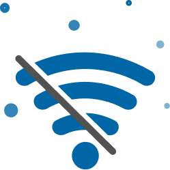

<ion-header class="ion-no-border ion-text-center">
  <ion-toolbar>
    <ion-title>{{"Satark" | translate}}</ion-title>
  </ion-toolbar>
</ion-header>
<ion-content class="ion-text-center">
  
  <br />
  <br />
  <br />
  <ion-label>No Internet Connection</ion-label>
  <br />
  <br />
  <ion-button (click)="checkConnection()">Try again</ion-button>
</ion-content>
